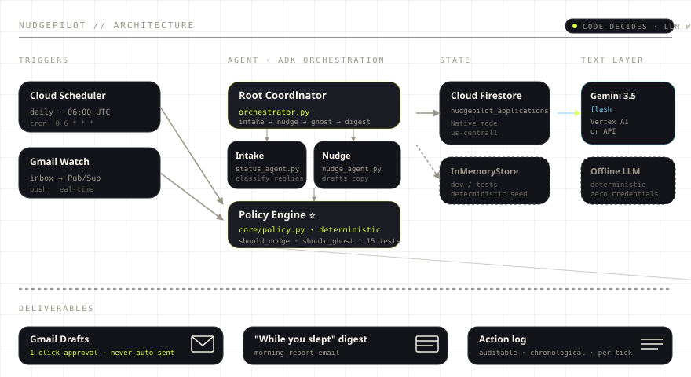

Trackers remember.
NudgePilot acts.
An agentic ghosting-nudger for the modern job search. It reads your inbox, tracks every application through a deterministic state machine, drafts the perfectly-timed follow-ups, detects dead pipelines, and emails you a "while you slept" report — asynchronously, while you do something else.
of job seekers reported being ghosted by employers in 2025 — a three-year high.
Rejections stink. Ghosting — applying to dozens of jobs and hearing nothing back — is the #1 frustration of the modern job search.
48% of applicants got zero response in 2025, a three-year high. Most candidates never follow up. The ones who do mis-time it — panicking at day 2 or giving up at day 10, when the median first response is 6–7 days and the median employer time-to-fill runs ~44 days.
Every thread. Every status. Every day-since-applied. The agent treats each one as a deterministic state — no vibes, no guessing.
One full tick — four steps, all autonomous.
Every run is the same loop. No humans in the path between 06:00 UTC and your inbox.
Intake
Consumes new inbox emails, classifies each one (rejection · interview · soft-pending · question · other) with Gemini, and updates application state via the policy engine.
Nudge
Asks the policy engine which applications are due for a follow-up. Drafts context-rich copy via Gemini. Lands in Gmail Drafts.
Ghost-close
After 2 ignored nudges + a 21-day silence, the pipeline is marked GHOSTED with the reason. You redirect your effort.
Digest
Emails you the "While you slept" report — what it drafted, what it closed, what it caught. The action log is auditable, chronological, per-tick.
LLMs for language.
Code for decisions.
core/policy.py. Gemini is confined to language: extraction, classification, drafting.
The autonomy dial — five guardrails the agent cannot break.
Judges will ask about this. The whole point of putting decisions in code is that the agent has a fixed ceiling. There is no full-auto default.
All nudges land in Gmail Drafts for 1-click approval. Full-auto is an opt-in toggle, never the default.
Maximum two follow-ups per application, ever. No exceptions, no overrides, no "just one more".
Minimum 7 days between nudges. Minimum 48 hours before re-poking the same thread.
Never nudge after an explicit rejection. Never resurrect a closed pipeline — even from a late reply. The candidate has already moved on.
After day 21 + 2 ignored nudges → GHOSTED. The pipeline is closed with a reason. You redirect effort to what's still alive.
How the agent is wired.
Triggered daily at 06:00 UTC. Deployed to Cloud Run (scale-to-zero). State in Cloud Firestore. LLM boundary kept narrow.

Cloud Scheduler fires daily at 06:00 UTC. Gmail Watch pushes inbound emails to Pub/Sub in real time. Both hit the same Cloud Run service.
Root coordinator calls three sub-agents: StatusAgent classifies emails, NudgeAgent drafts copy, Policy Engine makes every green/red decision.
Cloud Firestore in production (nudgepilot_applications collection). InMemoryStore for dev and tests, with a deterministic seeded corpus.
Gemini 3.5 Flash via Vertex AI in production, or Offline LLM (deterministic, zero credentials) for the demo path. Same prompt, same interface.
Three outputs per tick: Gmail Drafts (per-app follow-ups, awaiting approval), the "While you slept" digest email, and a per-tick action log for audit.
One real run. Captured.
python nudgepilot_cli.py auto · no edits
One-command deploy. ~$0/month.
Scale-to-zero Cloud Run + Gemini Flash + ~30 Firestore docs ≈ well under $1/month. The $150 hackathon credit lasts months.
# enable services gcloud services enable run.googleapis.com firestore.googleapis.com \ cloudscheduler.googleapis.com pubsub.googleapis.com aiplatform.googleapis.com # build and deploy to Cloud Run gcloud builds submit --tag gcr.io/$GOOGLE_CLOUD_PROJECT/nudgepilot . gcloud run deploy nudgepilot \ --image gcr.io/$GOOGLE_CLOUD_PROJECT/nudgepilot \ --platform managed --region us-central1 \ --allow-unauthenticated \ --memory 512Mi --timeout 300 \ --set-env-vars NUDGEPILOT_STORE=firestore # schedule the daily tick at 06:00 UTC gcloud pubsub topics create nudgepilot-tick gcloud scheduler jobs create http nudgepilot-daily \ --schedule="0 6 * * *" \ --uri="$RUN_URL/run" \ --http-method=POST
All services scale-to-zero. You pay per request. The agent runs once a day for ~10 seconds, on a 512Mi instance.